Take your seat
Every hero starts with 20 life, a 40-card deck and five cards in hand. The first player is chosen randomly and skips the first turn’s draw. Living seats then take turns in order.
Card game · 2–7 heroes · Custom decks
Build a deck, choose your targets and outlast the table. A duel or multiplayer card battle with Archers, Warriors, Mages and room to mix all three.
Learn the game ↓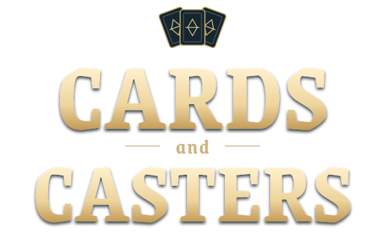
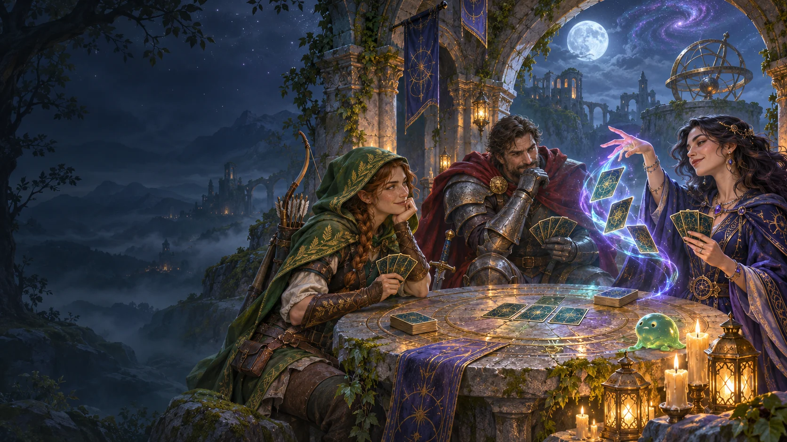
Cards and Casters is a card game for two to seven heroes. Play a duel or join a multiplayer table where the last hero standing wins. Pick Archer, Warrior or Mage, then use a ready-made deck or build your own from the full base set.
Every hero starts with 20 life, a 40-card deck and five cards in hand. The first player is chosen randomly and skips the first turn’s draw. Living seats then take turns in order.
Your total energy rises by one with no cap, your energy refills, you draw a card, and start-of-turn triggers resolve. Play affordable cards and attack with ready minions in any order. Ending your turn resolves end-of-turn triggers.
A hero is eliminated at zero life or after drawing from an empty deck. Their hand is discarded and their turns stop, but their cards in play remain. If the final heroes fall together, the current player wins.
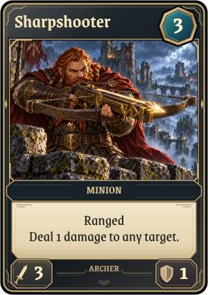
Ranged attacks, Hidden minions and direct damage. Post can give small Archer minions Ready and summon copies, while Wildfire wears down the whole table.
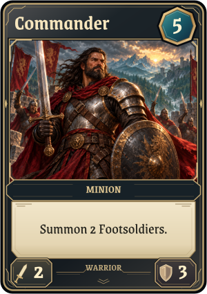
Build a board of efficient minions, summon Footsoldiers and strengthen them together. Banner keeps reinforcements coming, and Pillage removes troublesome trinkets.
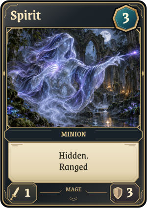
Bounce minions, draw cards and reshape the board. Control steals an opposing minion; Summon Primordial clears one hero’s board before creating your own 10/10.
Your deck must contain exactly 40 base-set cards. Include one to four copies of each card you choose; the Archer, Warrior and Mage level-up trinkets may appear any number of times. Cards from every class are legal. An invalid bot deck is eliminated before the first turn.
A card from your hero’s class costs its printed energy. A card from another class costs three extra energy, reduced by the levels in that class granted by cards you control. Classless cards have no surcharge.
For example, a Warrior pays 5 energy for the 2-energy Sniper. With two Archer level-up trinkets in play, that becomes 3; with three, it returns to 2.
The reference decks still contain 40 cards each. The card tables show their exact copy counts. A dash means the card is absent from that preconstructed deck, not that it is forbidden in a custom deck.
| Rule | How it works |
|---|---|
| Minions | Attack an opponent’s hero or minion once per turn, normally starting on your next turn after they enter play. You can choose among opponents at a multiplayer table. |
| Damage | Minions deal their power to each other simultaneously. Damage remains on survivors; zero toughness sends a minion to its original owner’s discard pile. |
| Ranged | Takes no combat damage from a non-Ranged minion, whether attacking or defending. Damage from card effects still applies. |
| Hidden N / Hidden | Cannot be attacked for N more of its controller’s turns, or indefinitely for plain Hidden. Card effects can still target it, and it can attack normally. |
| Ready | Can attack on the turn it enters play. It still only gets one normal attack per turn. |
| Lasts N | Leaves play as the Nth of its controller’s turns ends, counting the turn it entered. |
| Trinkets | Stay on the board but cannot attack or be attacked. Effects that target only minions skip them; trinket-targeting effects can still remove them. |
| Summoning | Summoned cards enter at the right of the board. Their on-play rules resolve for their controller after the summoning effect. Minions still need Ready to attack immediately. |
| Control and ownership | A stolen or gifted card keeps its damage and changes. A transferred minion waits until its new controller’s next turn to attack. Bouncing or destroying it returns it to its original owner’s hand or discard pile. |
| Changes and bounce | Damage, buffs and gained or lost rules persist while a card stays in play. Returning it to hand restores its printed state. |
| Duel | A forced fight exchanges combat damage without using either minion’s normal attack. Choose its two targets in order. |
| Targets and triggers | Resolve choices in the order requested. Discard choices and triggered effects can require decisions during another player’s turn; finish them before play continues. |
All 39 cards in the current base set are included below. Energy is the printed cost before off-class surcharges. Card text and stats come directly from the game. Select an image to inspect the full card.
These classless, zero-cost trinkets each grant one level in the named class while they remain in play. They reduce off-class costs and have no four-copy limit.
| Card | Energy | Type / power / toughness | Precon copies | Printed rules |
|---|---|---|---|---|
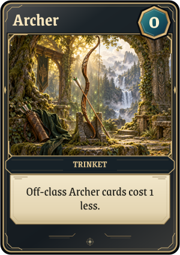 Archer | 0 | Trinket | — | Off-class Archer cards cost 1 less. |
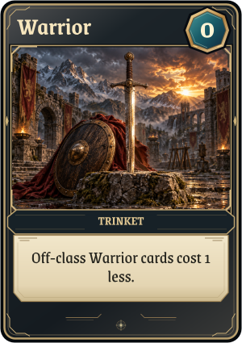 Warrior | 0 | Trinket | — | Off-class Warrior cards cost 1 less. |
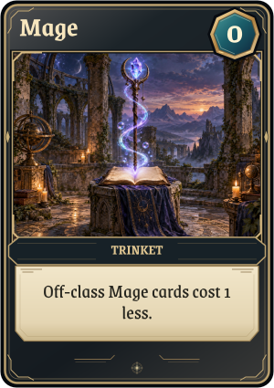 Mage | 0 | Trinket | — | Off-class Mage cards cost 1 less. |
| Card | Energy | Type / power / toughness | Precon copies | Printed rules |
|---|---|---|---|---|
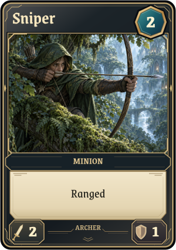 Sniper | 2 | Minion · 2 / 1 | 4 | Ranged |
| Sharpshooter | 3 | Minion · 3 / 1 | 4 | Ranged Deal 1 damage to any target. |
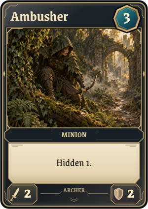 Ambusher | 3 | Minion · 2 / 2 | 4 | Hidden 1. |
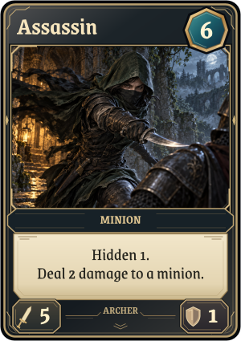 Assassin | 6 | Minion · 5 / 1 | 3 | Hidden 1. Deal 2 damage to a minion. |
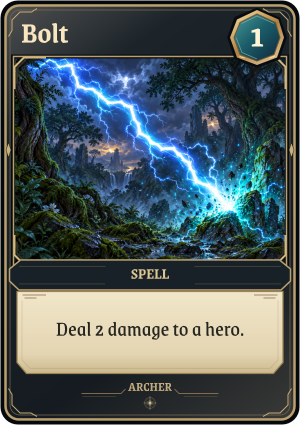 Bolt | 1 | Spell | 4 | Deal 2 damage to a hero. |
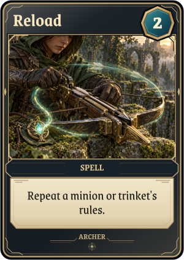 Reload | 2 | Spell | 3 | Repeat a minion or trinket's rules. |
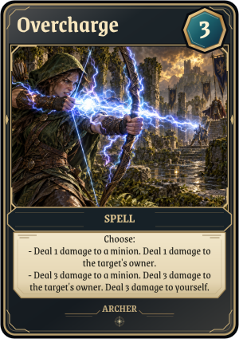 Overcharge | 3 | Spell | 4 | Choose: - Deal 1 damage to a minion. Deal 1 damage to the target's owner. - Deal 3 damage to a minion. Deal 3 damage to the target's owner. Deal 3 damage to yourself. |
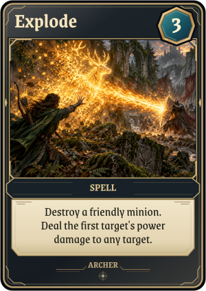 Explode | 3 | Spell | 2 | Destroy a friendly minion. Deal the first target's power damage to any target. |
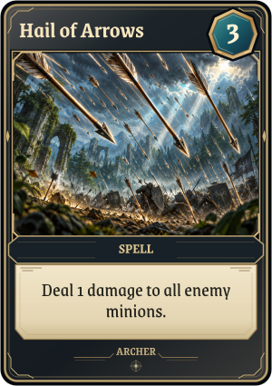 Hail of Arrows | 3 | Spell | 4 | Deal 1 damage to all enemy minions. |
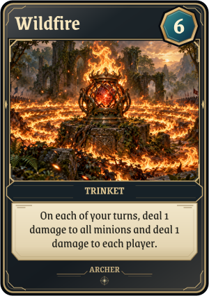 Wildfire | 6 | Trinket | 4 | On each of your turns, deal 1 damage to all minions and deal 1 damage to each player. |
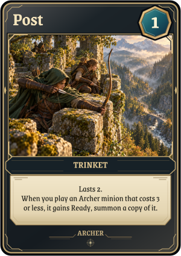 Post | 1 | Trinket | 4 | Lasts 2. When you play an Archer minion that costs 3 or less, it gains Ready, summon a copy of it. |
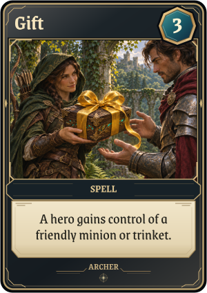 Gift | 3 | Spell | — | A hero gains control of a friendly minion or trinket. |
| Card | Energy | Type / power / toughness | Precon copies | Printed rules |
|---|---|---|---|---|
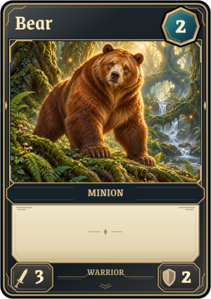 Bear | 2 | Minion · 3 / 2 | 4 | No additional effect. |
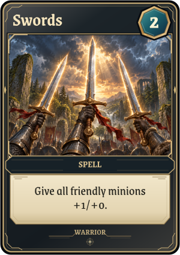 Swords | 2 | Spell | 4 | Give all friendly minions +1/+0. |
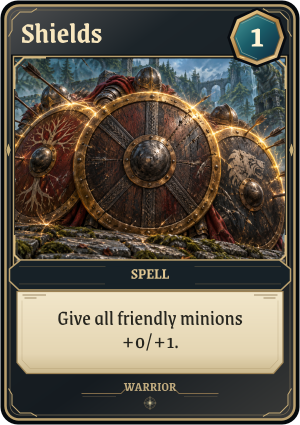 Shields | 1 | Spell | 4 | Give all friendly minions +0/+1. |
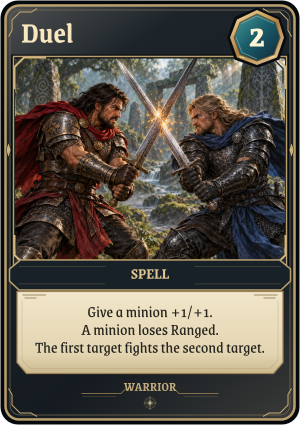 Duel | 2 | Spell | 4 | Give a minion +1/+1. A minion loses Ranged. The first target fights the second target. |
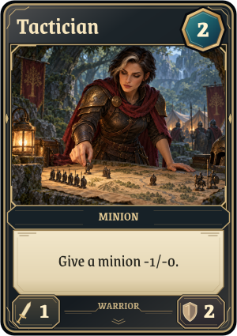 Tactician | 2 | Minion · 1 / 2 | 4 | Give a minion -1/-0. |
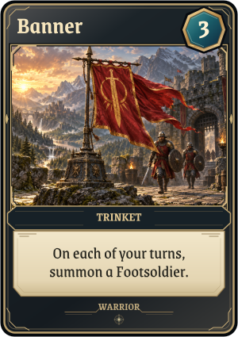 Banner | 3 | Trinket | 4 | On each of your turns, summon a Footsoldier. |
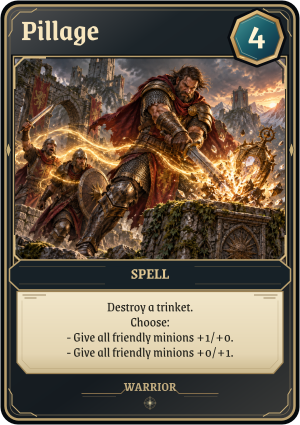 Pillage | 4 | Spell | 4 | Destroy a trinket. Choose: - Give all friendly minions +1/+0. - Give all friendly minions +0/+1. |
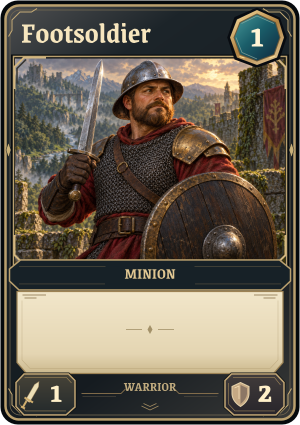 Footsoldier | 1 | Minion · 1 / 2 | 4 | No additional effect. |
| Commander | 5 | Minion · 2 / 3 | 4 | Summon 2 Footsoldiers. |
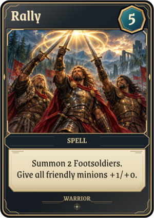 Rally | 5 | Spell | 4 | Summon 2 Footsoldiers. Give all friendly minions +1/+0. |
| Card | Energy | Type / power / toughness | Precon copies | Printed rules |
|---|---|---|---|---|
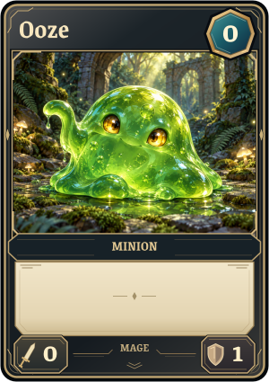 Ooze | 0 | Minion · 0 / 1 | — | No additional effect. |
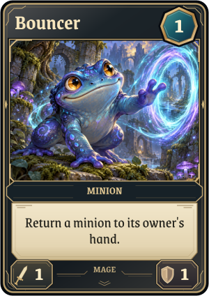 Bouncer | 1 | Minion · 1 / 1 | 4 | Return a minion to its owner's hand. |
| Spirit | 3 | Minion · 1 / 3 | 4 | Hidden. Ranged |
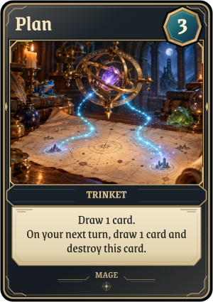 Plan | 3 | Trinket | 4 | Draw 1 card. On your next turn, draw 1 card and destroy this card. |
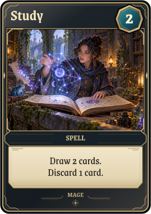 Study | 2 | Spell | 4 | Draw 2 cards. Discard 1 card. |
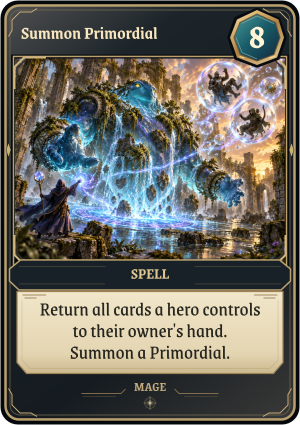 Summon Primordial | 8 | Spell | 4 | Return all cards a hero controls to their owner's hand. Summon a Primordial. |
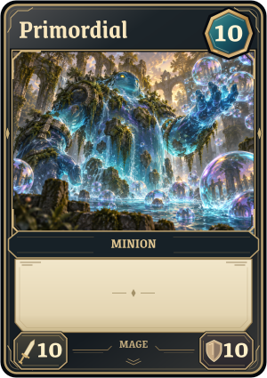 Primordial | 10 | Minion · 10 / 10 | — | No additional effect. |
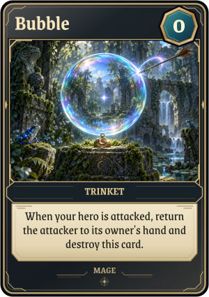 Bubble | 0 | Trinket | — | When your hero is attacked, return the attacker to its owner's hand and destroy this card. |
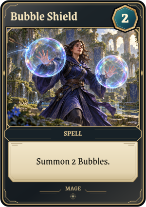 Bubble Shield | 2 | Spell | 4 | Summon 2 Bubbles. |
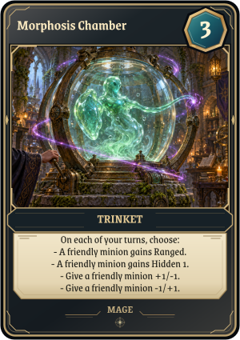 Morphosis Chamber | 3 | Trinket | 4 | On each of your turns, choose: - A friendly minion gains Ranged. - A friendly minion gains Hidden 1. - Give a friendly minion +1/-1. - Give a friendly minion -1/+1. |
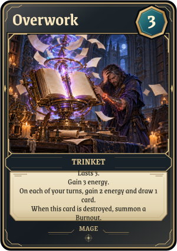 Overwork | 3 | Trinket | 4 | Lasts 3. Gain 3 energy. On each of your turns, gain 2 energy and draw 1 card. When this card is destroyed, summon a Burnout. |
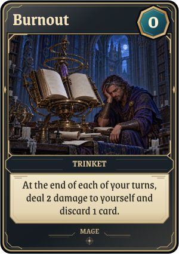 Burnout | 0 | Trinket | — | At the end of each of your turns, deal 2 damage to yourself and discard 1 card. |
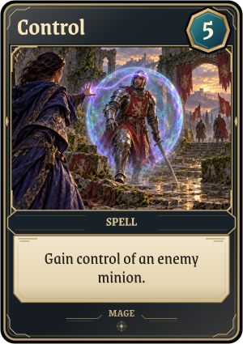 Control | 5 | Spell | 4 | Gain control of an enemy minion. |
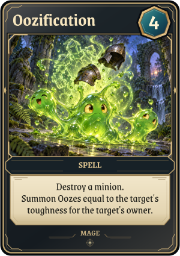 Oozification | 4 | Spell | 4 | Destroy a minion. Summon Oozes equal to the target's toughness for the target's owner. |
| Card | Created by | In the default deck? |
|---|---|---|
| Footsoldier | Commander, Rally and Banner. | Yes: four copies in Warrior. |
| Ooze | Oozification, one per point of the destroyed minion’s current toughness. | No. |
| Bubble | Bubble Shield. An attack on your hero triggers its bounce and destroys the Bubble. | No. |
| Primordial | Summon Primordial creates a 10/10 after returning one targeted hero’s board to hand. | No. The spell has four copies in Mage. |
| Burnout | Overwork creates it when destroyed. At the end of your turn it damages you for 2 and makes you discard a card. | No. |
These cards also belong to the base set and can be included in custom decks under the normal copy limits.
At a multiplayer table, spending everything to eliminate one rival can leave you exposed to the others. Count damage across the whole table before committing.
Warrior buffs affect the minions already in play. Rally summons its Footsoldiers before adding power, so the new recruits benefit too.
A multiclass deck gains options but can lose tempo to the energy surcharge. Level-up trinkets help, and bounce or trinket removal can make those costs rise again.
Play in the browser on Softmax, or run the native game from games/cac in a Polyworld checkout:
nim c src/cac.nim
./cac --human
./cac --players 4 --human
./cac --cardsThe human player picks a class and uses its preconstructed deck. Pass
--human players/archer_warrior.bas to use that script’s class and
custom deck. Bots are BASIC scripts; recorded matches can be watched with
--replay PATH.
Rules reviewed on 9 November 2026. This guide describes the source version available on that date; match settings and older replays can differ.